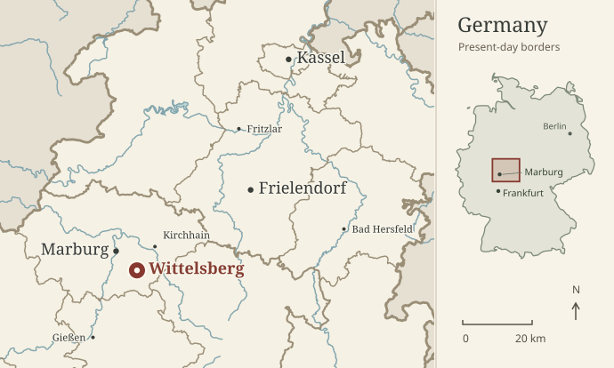
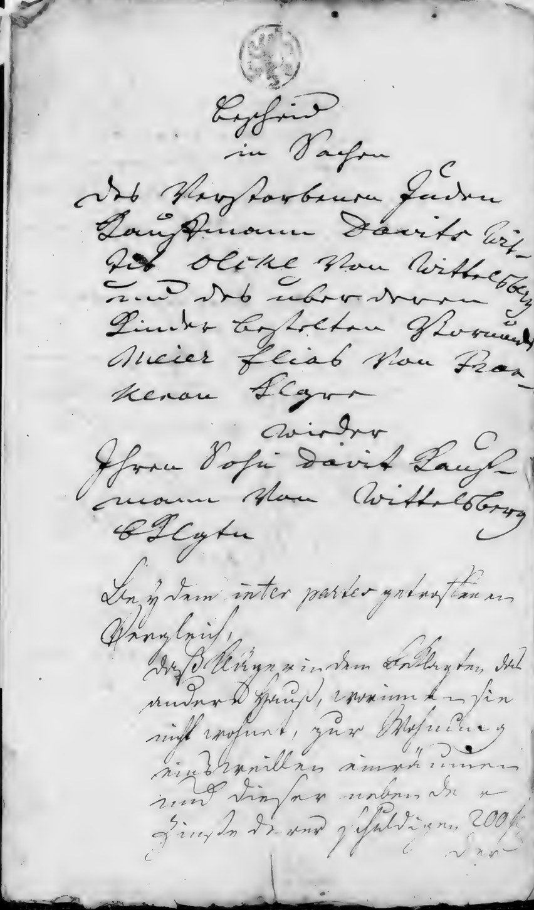
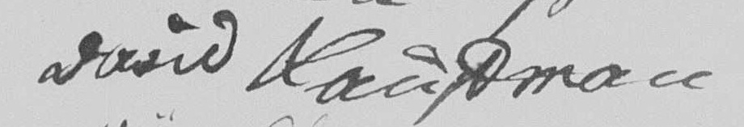
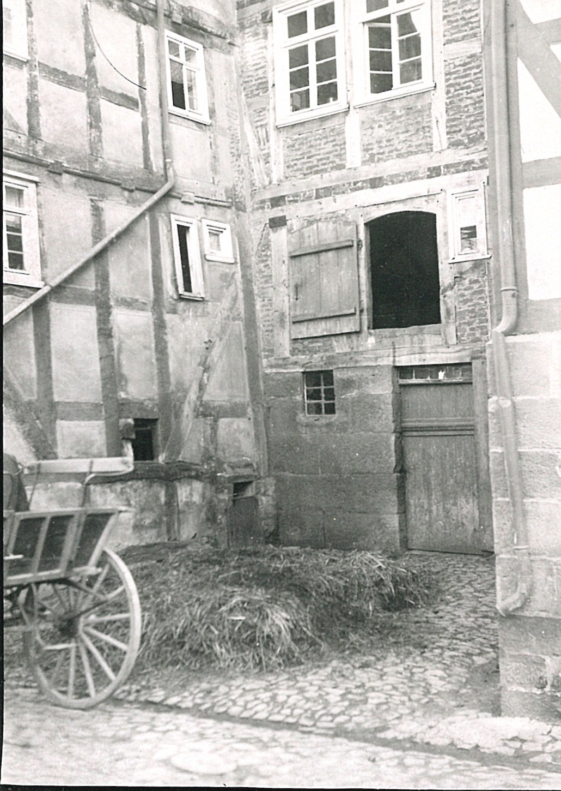

The Baums in Wittelsberg
From the first Jewish household in the village to a family of cattle dealers near Marburg.

How Jewish families came to rural Hesse
Hesse is a state in central Germany, best known for the city of Frankfurt. Jews first settled in the region during the Middle Ages, when families followed trade routes from what are now Italy and France and moved to cities such as Marburg. They made up a small share of the population. They spoke Western Yiddish among themselves, used German with their Christian neighbors, and read and prayed in Hebrew.

Both Jews and Christians lent money in medieval Hesse, but rulers could single out debts owed to Jews for cancellation. In 1391 King Wenceslaus released borrowers in Friedberg from debts they owed Jewish lenders. For those borrowers, the loss of their Jewish neighbors’ right to collect meant a direct financial gain.
After massacres and expulsions in the cities, some families found refuge in the countryside. A local nobleman could grant a Jewish family a letter of protection in return for payment. The letter gave the family permission to settle on his lands and placed it under his protection. Jewish households became scattered across the Hessian countryside, often only one or two families to a village.
A later migration brought Sephardic Jews to the region in the seventeenth and eighteenth centuries. One likely route began with the expulsion from Spain in 1492. Families took refuge in Portugal, and some of their descendants left for Amsterdam in the late sixteenth century. From there, some made their way to the Rhineland and into Hesse.
Restrictions on owning farmland and joining craft guilds shaped how Jews in rural Hesse made a living. Local records often described Jewish traders simply as “merchants.” Some sold cloth and other dry goods, some dealt in livestock, and some sold meat. A smaller number worked as teachers or rabbis, often serving several villages. Selling on credit was part of the livestock trade. A farmer who needed a cow could take it home and pay the dealer later.
The first Jewish household in Wittelsberg
Wittelsberg was, and still is, a small village near Marburg. Around 1690, Jewish families began settling in Amöneburg, two villages over, and in Holzhausen, Wittelsberg’s immediate neighbor. Some of these families were Sephardic. Over several generations they married into local Ashkenazi families and adopted their customs.
An early government record calls Wittelsberg’s first Jewish householder “Jud David,” or “David the Jew.” He settled in the village by 1744. He was probably David Salomon, meaning David, son of Salomon. Salomon was among the early Jewish residents of Holzhausen, where his eldest son, Aaron, owned a house. David was likely Aaron’s younger brother. David lived in a modest house in Wittelsberg and earned his living buying and selling cattle. The name of his wife is unknown.
David Salomon named his son Kauffman. While Kauffman means “merchant”, and was familiar as an occupational surname among non-Jews, Jews also used it as a first name (it was traditionally associated with the Hebrew Yakov, or Jacob, as both could be referred to by the nickname Kov). When Kauffman had a son of his own in 1758, he named the boy for his grandfather. So the father was Kauffman David, and the son was David Kauffman.
Olcke and the family home
The custom in the family was to leave the house to the eldest son. In his will, Kauffman left the house to David. But Kauffman's wife, Olcke, could decide when to turn it over. She was entitled to keep it for the rest of her life.
By 1789 Kauffman had died, and David was about to marry Röschen Meier. The young couple wanted to live in the family home. Olcke was willing to give her son ownership, but she wanted to continue living there herself. There was a second house, which the family may have rented to tenants. Neither Olcke nor David seems to have wanted it. Before the wedding, mother and son hashed out a legal agreement: David could have the first house, and Olcke could live in it for life. If they found they could not get along under one roof, David would be the one to move.
Olcke and the couple apparently did not get along. Six months after the wedding, the family went to court, and the judge ordered David and Röschen to move into the second house. Olcke stayed.


How the family became the Baums
In 1807 Napoleon made his younger brother Jérôme king of Westphalia, a new kingdom that included this part of Hesse. In January 1808, Jérôme granted Jews the right to settle in towns and to marry without special permission. He abolished taxes levied specifically on Jews and opened occupations from which they had been barred.


A second decree in March required Jewish families to choose a hereditary surname rather than name each new generation with the father's first name. Many chose "ornamental names", selecting a word for essentially aesthetic reasons. Plant-related surnames were popular. David Kauffman chose Baum, the German word for “tree.” When the kingdom fell in 1813, Jews lost the legal equality Jérôme had granted them. The legal status of Jews would change several more times over the following century, with rights expanding and contracting. The surnames endured. Read the 1808 decree in English.
House No. 33
Later generations told of a Stammhaus, an ancestral home that had always passed to the eldest son. While family lore suggests continuous occupancy of the same home for many generations, the truth is more complicated. Baum family members sometimes occupied several homes at a time and had lived in several houses by the time they acquired the house remembered as the ancestral home by later descendants. David was already in his sixties when, in 1821 or 1822, he bought House No. 33 from the Kloos family after its owner was killed working in a clay pit. The Baums would live there for about 115 years.
There were thirteen rooms and a barn with space for cows and horses. One room was set aside for Jewish services. The congregation’s synagogue was about a kilometer away in Holzhausen, close enough for the Baums to walk or, in later years, ride a bicycle. In Wittelsberg itself, the family’s home served as the village synagogue at times.
In David’s day, the street was called the Eichgraben. Its present address is Moischter Straße 6.



David’s son Isaak, born in 1796, inherited No. 33. He lived there with his wife, Veilchen Markheim, known as Feile, who had been born in 1799. In the 1850s, as a rural downturn in Hesse and the prospect of earning a living in the United States drew emigrants across the Atlantic, three of their sons left for America. Two settled in New York City. A third, Emmanuel, also called Mendel, made his way to California. The eldest, Elias, stayed in Wittelsberg and inherited the house and the cattle business.
Isaak Baum and Veilchen Markheim
Anschel Baum and Lina Grünbaum
Elias married Bertha Wolf, born in 1842, and continued to trade cattle in Wittelsberg. Their first son, Anschel, was born in 1868. Bertha died in childbirth in 1880, at thirty-eight. Her granddaughter Bertha Baum, Margot’s mother, bore her name.
The cattle trade in Elias and Anschel’s time
Anschel, who married Lina Grünbaum of Staden, followed Elias into the cattle trade and later sold grain and animal feed as well. A dealer like Elias or Anschel knew which farmer in the district needed a milk cow and which one had an animal ready to sell. He could pay a farmer on the spot, take an older animal in exchange, or let a buyer pay later. At the market in nearby Kirchhain, the cattle he brought in from scattered farms could go on by rail to a larger town.
From the late 1870s, cheap imported grain drove down the prices Hessian farmers received for their crops. A farmer who had bought cattle on credit still owed the dealer the same amount, however little his harvest brought in. Otto Böckel built a political career in the countryside around Marburg by portraying Jewish cattle and grain dealers as “usurers” and blaming them for the farmers’ hardship. In 1887, the year Anschel turned nineteen, the constituency that included Wittelsberg elected Böckel to the Reichstag, the German parliament. His movement organized boycotts, set up rival cooperatives, and promoted markets that would exclude Jewish traders.
On July 13, 1898, most Jewish cattle dealers reportedly went to the market in Gießen to protest Kirchhain’s strong vote for Böckel, who had promoted cattle markets that excluded Jews. The ordinary Kirchhain market went ahead that day with about 100 animals instead of the usual 600 to 1,000. Read the contemporary report.